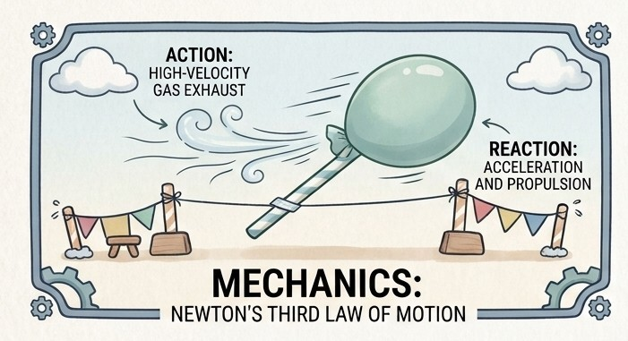

⚡ Physics
Discovering how forces create motion 🎈 Balloon Rocket: Newton’s Third Law in Action

Have you ever wondered how a rocket moves forward without pushing against the ground? The answer lies in Newton’s Third Law of Motion.
For every action, there is an equal and opposite reaction.
In this activity, a simple balloon helps us understand how forces work in opposite directions.
The Science Behind the Activity
When the balloon is inflated, air is stored inside it. As the balloon is released, the air rushes out in one direction. The balloon moves in the opposite direction.
Action: The balloon pushes the air backward.
Reaction: The escaping air pushes the balloon forward.
This opposite force makes the balloon travel along the thread like a tiny rocket.
Aim
To demonstrate Newton’s Third Law of Motion through a balloon rocket.
Materials Required
Balloon • Straw • Thread • Tape • Two supports
How the Activity Works
Pass a thread through a straw and tie it tightly between two supports.
Inflate a balloon without tying its mouth.
Tape the balloon to the straw.
Release the balloon and observe its movement.
What Do We Observe?
The balloon moves forward as air escapes backward. The greater the air released, the stronger the push experienced by the balloon.
Conclusion
The balloon rocket demonstrates that forces always occur in pairs. The backward movement of air produces a forward reaction force, causing the balloon to move.